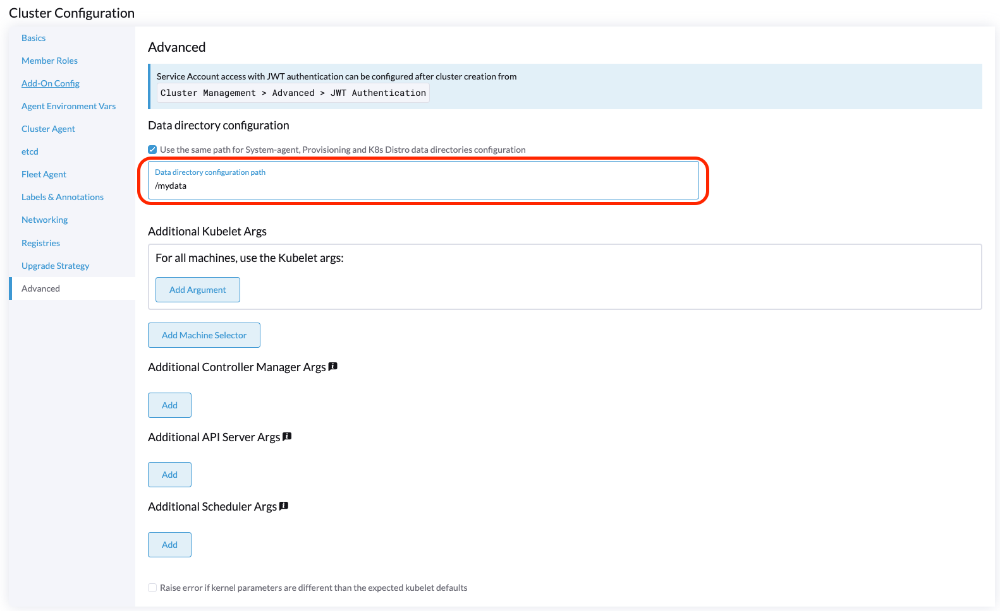

Fournisseur de Cloud Harvester
Vous pouvez provisionner des clusters RKE2 dans Rancher en utilisant le pilote de nœud intégré Harvester. Harvester offre la prise en charge de l’équilibreur de charge et du passage direct du stockage pour le cluster Kubernetes invité.
Avis de compatibilité avec les versions précédentes
|
Veuillez noter un problème de compatibilité connu si vous utilisez la version v0.2.2 ou supérieure du fournisseur de cloud Harvester. Si votre version de Harvester est inférieure à v1.2.0 et que vous avez l’intention d’utiliser des versions RKE2 plus récentes (c’est-à-dire, >= Pour une matrice de support détaillée, veuillez vous référer à la section Harvester CCM & CSI Driver avec les versions RKE2 du site officiel. |
Déploiement
Conditions préalables
-
Le cluster Kubernetes est construit sur des machines virtuelles Harvester.
-
Les machines virtuelles Harvester fonctionnant comme nœuds Kubernetes invités se trouvent dans le même espace de noms.
-
Les noms d’hôte des machines virtuelles invitées Harvester correspondent à leurs noms de machines virtuelles Harvester respectifs. Les machines virtuelles Harvester du cluster invité ne peuvent pas avoir des noms d’hôte différents de leurs noms de machines virtuelles Harvester lors de l’utilisation du pilote CSI Harvester. Nous espérons supprimer cette limitation dans une future version de Harvester.
|
Chaque machine virtuelle Harvester doit disposer du Pour vérifier si le module de kernel est disponible, accédez à la VM et exécutez les commandes suivantes : Le module de kernel est probablement manquant si les éléments suivants se produisent :
Par défaut, le module de kernel Pour éliminer le besoin d’intervention manuelle après que le cluster invité soit provisionné, construisez vos propres images cloud en utilisant le openSUSE Build Service (OBS). Vous devez supprimer le paquet |
Déploiement vers le Cluster RKE2 avec le Pilote de Nœud Harvester
Lors de la création d’un cluster RKE2 en utilisant le pilote de nœud Harvester, sélectionnez le fournisseur cloud Harvester. Le pilote de nœud aidera ensuite à déployer automatiquement à la fois le pilote CSI et le CCM.

À partir de Rancher v2.9.0, vous pouvez configurer un dossier spécifique pour les données de configuration cloud en utilisant le champ Chemin de configuration du répertoire de données.

Déploiement Manuel vers le Cluster RKE2
-
Générez des données de configuration cloud en utilisant le script
generate_addon.sh, puis placez les données sur chaque nœud personnalisé (répertoire :/etc/kubernetes/cloud-config).curl -sfL https://raw.githubusercontent.com/harvester/cloud-provider-harvester/master/deploy/generate_addon.sh | bash -s <serviceaccount name> <namespace>Le script dépend de
kubectletjqlors de l’exploitation du cluster Harvester, et fonctionne uniquement lorsqu’il a accès au fichier kubeconfigHarvester Cluster.Vous pouvez trouver le fichier
kubeconfigdans l’un des nœuds de gestion Harvester dans le chemin/etc/rancher/rke2/rke2.yaml. L’adresse IP du serveur doit être remplacée par l’adresse VIP.Exemple de contenu :
apiVersion: v1 clusters: - cluster: certificate-authority-data: <redacted> server: https://127.0.0.1:6443 name: default # ...Vous devez spécifier l’espace de noms dans lequel le cluster invité sera créé.
Exemple de sortie :
########## cloud config ############ apiVersion: v1 clusters: - cluster: certificate-authority-data: <CACERT> server: https://HARVESTER-ENDPOINT/k8s/clusters/local name: local contexts: - context: cluster: local namespace: default user: harvester-cloud-provider-default-local name: harvester-cloud-provider-default-local current-context: harvester-cloud-provider-default-local kind: Config preferences: {} users: - name: harvester-cloud-provider-default-local user: token: <TOKEN> ########## cloud-init user data ############ write_files: - encoding: b64 content: <CONTENT> owner: root:root path: /etc/kubernetes/cloud-config permissions: '0644' -
Sur la page de création du cluster RKE2, allez à l’écran Configuration du Cluster et définissez la valeur de Fournisseur Cloud sur Externe.

-
Copiez et collez le contenu
cloud-init user datadans Pools de Machines > Afficher Avancé > Données Utilisateur.
-
Ajoutez le CRD
HelmChartpourharvester-cloud-providerà Configuration du cluster > Configuration des produits complémentaires > Manifeste supplémentaire.Vous devez remplacer
<cluster-name>par le nom de votre cluster.apiVersion: helm.cattle.io/v1 kind: HelmChart metadata: name: harvester-cloud-provider namespace: kube-system spec: targetNamespace: kube-system bootstrap: true repo: https://raw.githubusercontent.com/rancher/charts/dev-v2.9 chart: harvester-cloud-provider version: 104.0.2+up0.2.6 helmVersion: v3 valuesContent: |- global: cattle: clusterName: <cluster-name>
-
Pour créer l’équilibreur de charge, ajoutez l’annotation
cloudprovider.harvesterhci.io/ipam: <dhcp|pool>.
Déploiement sur le cluster personnalisé RKE2 (expérimental)

-
Générez des données de configuration cloud en utilisant le script
generate_addon.sh, puis placez les données sur chaque nœud personnalisé (répertoire :/etc/kubernetes/cloud-config).curl -sfL https://raw.githubusercontent.com/harvester/cloud-provider-harvester/master/deploy/generate_addon.sh | bash -s <serviceaccount name> <namespace>Le script dépend de
kubectletjqlors de l’exploitation du cluster Harvester, et fonctionne uniquement lorsqu’il a accès au fichier kubeconfigHarvester Cluster.Vous pouvez trouver le fichier
kubeconfigdans l’un des nœuds de gestion Harvester dans le chemin/etc/rancher/rke2/rke2.yaml. L’adresse IP du serveur doit être remplacée par l’adresse VIP.Exemple de contenu :
apiVersion: v1 clusters: - cluster: certificate-authority-data: <redacted> server: https://127.0.0.1:6443 name: default # ...Vous devez spécifier l’espace de noms dans lequel le cluster invité sera créé.
Exemple de sortie :
########## cloud config ############ apiVersion: v1 clusters: - cluster: certificate-authority-data: <CACERT> server: https://HARVESTER-ENDPOINT/k8s/clusters/local name: local contexts: - context: cluster: local namespace: default user: harvester-cloud-provider-default-local name: harvester-cloud-provider-default-local current-context: harvester-cloud-provider-default-local kind: Config preferences: {} users: - name: harvester-cloud-provider-default-local user: token: <TOKEN> ########## cloud-init user data ############ write_files: - encoding: b64 content: <CONTENT> owner: root:root path: /etc/kubernetes/cloud-config permissions: '0644' -
Créez une VM dans le cluster Harvester avec les paramètres suivants :
-
Onglet Bases: Les exigences minimales sont de 2 UC et 4 Gio de RAM. L’espace disque requis dépend de l’image de la VM.

-
Onglet Réseaux: Spécifiez un nom de réseau au format
nic-<number>.
-
Onglet Options avancées : Copiez et collez le contenu de l’écran Cloud Config User Data.

-
-
Dans l’onglet Bases de l’écran Configuration du cluster, sélectionnez Harvester comme Fournisseur de cloud puis sélectionnez Créer pour démarrer le cluster.

-
Dans l’onglet Inscription, effectuez les étapes nécessaires pour exécuter la commande d’inscription RKE2 sur la VM.

Déploiement sur le cluster K3s avec le pilote de nœud Harvester (expérimental)
Lors du démarrage d’un cluster K3s en utilisant le pilote de nœud Harvester, vous pouvez effectuer les étapes suivantes pour déployer le fournisseur de cloud Harvester :
-
Utilisez
generate_addon.shpour générer la configuration cloud.curl -sfL https://raw.githubusercontent.com/harvester/cloud-provider-harvester/master/deploy/generate_addon.sh | bash -s <serviceaccount name> <namespace>
La sortie ressemblera à ceci :
########## cloud config ############ apiVersion: v1 clusters: - cluster: certificate-authority-data: <CACERT> server: https://HARVESTER-ENDPOINT/k8s/clusters/local name: local contexts: - context: cluster: local namespace: default user: harvester-cloud-provider-default-local name: harvester-cloud-provider-default-local current-context: harvester-cloud-provider-default-local kind: Config preferences: {} users: - name: harvester-cloud-provider-default-local user: token: <TOKEN> ########## cloud-init user data ############ write_files: - encoding: b64 content: <CONTENT> owner: root:root path: /etc/kubernetes/cloud-config permissions: '0644' -
Copiez et collez le contenu
cloud-init user datadans Machine Pools > Afficher avancé > Données utilisateur. -
Ajoutez le
HelmChartyaml suivant deharvester-cloud-providerà Configuration du cluster > Configuration des produits complémentaires > Manifeste supplémentaire.apiVersion: helm.cattle.io/v1 kind: HelmChart metadata: name: harvester-cloud-provider namespace: kube-system spec: targetNamespace: kube-system bootstrap: true repo: https://charts.harvesterhci.io/ chart: harvester-cloud-provider version: 0.2.2 helmVersion: v3
-
Désactivez le fournisseur de cloud
in-treede plusieurs manières :-
Cliquez sur le bouton
Edit as YAML.image::rancher/edit-k3s-cluster-yaml.png[] ** Désactiver
servicelbet définirdisable-cloud-controller: truepour désactiver le contrôleur de cloud K3s par défaut.machineGlobalConfig: disable: - servicelb disable-cloud-controller: true -
Ajoutez
cloud-provider=externalpour utiliser le fournisseur de cloud Harvester.machineSelectorConfig: - config: kubelet-arg: - cloud-provider=external protect-kernel-defaults: false

-
Avec ces paramètres en place, un cluster K3s devrait être provisionné avec succès tout en utilisant le fournisseur de cloud externe.
Mettre à niveau le fournisseur de cloud
Mettre à niveau RKE2
Le fournisseur de cloud peut être mis à niveau en mettant à niveau la version de RKE2. Vous pouvez mettre à niveau le cluster RKE2 via l’interface utilisateur de Rancher comme suit :
-
Cliquez sur ☰ > Gestion des clusters.
-
Trouvez le cluster invité que vous souhaitez mettre à niveau et sélectionnez ⋮ > Modifier la configuration.
-
Sélectionnez Version de Kubernetes.
-
Cliquez sur Enregistrer.
Mettre à niveau K3s
Mise à niveau du fournisseur de cloud K3s via l’interface utilisateur de Rancher, comme suit :
-
Cliquez sur ☰ > Cluster K3s > Applications > Applications installées.
-
Trouvez le graphique du fournisseur de cloud et sélectionnez ⋮ > Modifier/Mise à niveau.
-
Sélectionnez Version.
-
Cliquez sur Suivant > Mettre à jour.
|
Le processus de mise à niveau pour un cluster invité à nœud unique peut être bloqué lorsque le nouveau pod Pour plus d’informations, consultez ce commentaire sur l’issue GitHub. Pour résoudre le problème, supprimez manuellement l’ancien pod |
Support de l’équilibreur de charge
Une fois que vous avez déployé le fournisseur de cloud Harvester, vous pouvez utiliser le service Kubernetes LoadBalancer pour exposer un microservice au sein du cluster invité au monde extérieur. La création d’un service Kubernetes LoadBalancer attribue un équilibreur de charge Harvester dédié au service, et vous pouvez apporter des ajustements via le Add-on Config dans l’interface utilisateur Rancher.

IPAM
L’équilibreur de charge intégré de Harvester offre à la fois des modes DHCP et Pool, et vous pouvez le configurer en ajoutant l’annotation cloudprovider.harvesterhci.io/ipam: $mode à son service correspondant. À partir du fournisseur de cloud Harvester >= v0.2.0, il introduit également un mode unique Partage d’IP. Un service partage son IP d’équilibreur de charge avec d’autres services dans ce mode.
-
DHCP : Un serveur DHCP est requis. L’équilibreur de charge Harvester demandera une adresse IP au serveur DHCP.
-
Pool: Vous devez d’abord créer un pool d’IP en utilisant soit l’SUSE Virtualization UI, soit l’Rancher UI (voir Meilleures pratiques pour des informations sur les différences entre les deux méthodes). Le contrôleur d’équilibreur de charge SUSE Virtualization allouera une IP pour le service d’équilibreur de charge suivant la stratégie de sélection de pool d’IP.
-
Partage d’IP: Lors de la création d’un nouveau service d’équilibreur de charge, vous pouvez réutiliser une IP de service d’équilibreur de charge existante. Le nouveau service est appelé service secondaire, tandis que le service actuellement choisi est le service principal. Pour spécifier le service principal dans le service secondaire, vous pouvez ajouter l’annotation
cloudprovider.harvesterhci.io/primary-service: $primary-service-name. Cependant, il existe deux limitations connues :-
Les services partageant la même adresse IP ne peuvent pas utiliser le même port.
-
Les services secondaires ne peuvent pas partager leur IP avec d’autres services.
-
|
Modifier le mode |
Contrôles de santé
À partir de la version 0.2.0 du fournisseur de cloud Harvester, des contrôles de santé supplémentaires du service LoadBalancer au sein du cluster Kubernetes invité ne sont plus nécessaires. Au lieu de cela, vous pouvez configurer des sondes vivacité et readiness pour vos charges de travail. Par conséquent, tous les pods indisponibles seront automatiquement supprimés des points de terminaison de l’équilibreur de charge pour atteindre le même résultat souhaité.